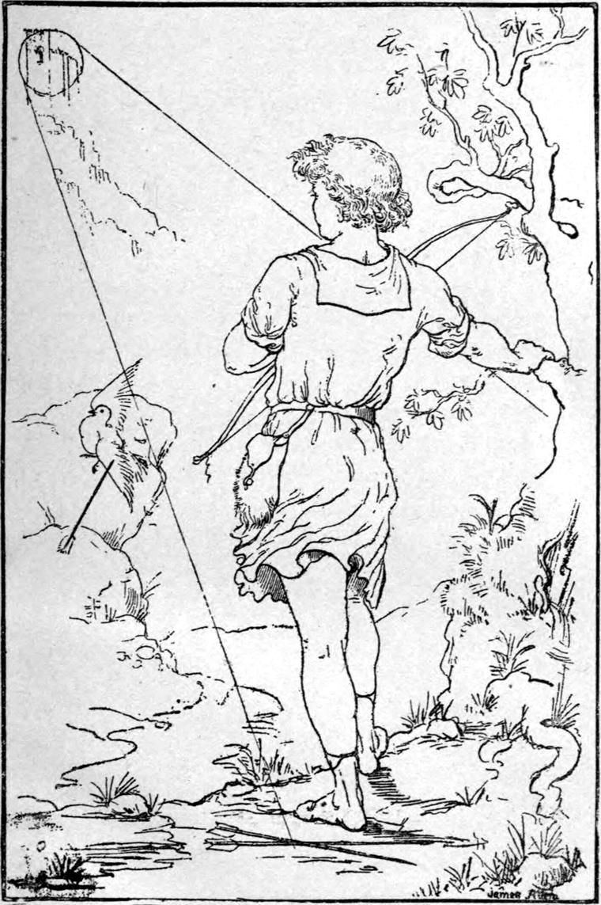

When in the winter they had had their supper and sat about the fire, or when in the summer they lay on the border of the rock-margined stream that ran through their little meadow close by the door of their cottage, issuing from the far-up whiteness often folded in clouds, Curdie's mother would not seldom lead the conversation to one peculiar personage said and believed to have been much concerned in the late issue of events.
That personage was the great-great-grandmother of the princess, of whom the princess had often talked, but whom neither Curdie nor his mother had ever seen. Curdie could indeed remember, although already it looked more like a dream than he could account for if it had really taken place, how the princess had once led him up many stairs to what she called a beautiful room in the top of the tower, where she went through all the—what should he call it?—the behaviour of presenting him to her grandmother, talking now to her and now to him, while all the time he saw nothing but a bare garret, a heap of musty straw, a sunbeam, and a withered apple. Lady, he would have declared before the king himself, young or old, there was none, except the princess herself, who was certainly vexed that he could not see what she at least believed she saw.
As for his mother, she had once seen, long before Curdie was born, a certain mysterious light of the same description as one Irene spoke of, calling it her grandmother's moon; and Curdie himself had seen this same light, shining from above the castle, just as the king and princess were taking their leave. Since that time neither had seen or heard anything that could be supposed connected with her. Strangely enough, however, nobody had seen her go away. If she was such an old lady, she could hardly be supposed to have set out alone and on foot when all the house was asleep. Still, away she must have gone, for, of course, if she was so powerful, she would always be about the princess to take care of her.
But as Curdie grew older, he doubted more and more whether Irene had not been talking of some dream she had taken for reality: he had heard it said that children could not always distinguish betwixt dreams and actual events. At the same time there was his mother's testimony: what was he to do with that? His mother, through whom he had learned everything, could hardly be imagined by her own dutiful son to have mistaken a dream for a fact of the waking world.
So he rather shrank from thinking about it, and the less he thought about it, the less he was inclined to believe it when he did think about it, and therefore, of course, the less inclined to talk about it to his father and mother; for although his father was one of those men who for one word they say think twenty thoughts, Curdie was well assured that he would rather doubt his own eyes than his wife's testimony.
There were no others to whom he could have talked about it. The miners were a mingled company—some good, some not so good, some rather bad—none of them so bad or so good as they might have been; Curdie liked most of them, and was a favourite with all; but they knew very little about the upper world, and what might or might not take place there. They knew silver from copper ore; they understood the underground ways of things, and they could look very wise with their lanterns in their hands searching after this or that sign of ore, or for some mark to guide their way in the hollows of the earth; but as to great-great-grandmothers, they would have mocked Curdie all the rest of his life for the absurdity of not being absolutely certain that the solemn belief of his father and mother was nothing but ridiculous nonsense. Why, to them the very word 'great-great-grandmother' would have been a week's laughter! I am not sure that they were able quite to believe there were such persons as great-great-grandmothers; they had never seen one. They were not companions to give the best of help toward progress, and as Curdie grew, he grew at this time faster in body than in mind—with the usual consequence, that he was getting rather stupid—one of the chief signs of which was that he believed less and less in things he had never seen. At the same time I do not think he was ever so stupid as to imagine that this was a sign of superior faculty and strength of mind. Still, he was becoming more and more a miner, and less and less a man of the upper world where the wind blew. On his way to and from the mine he took less and less notice of bees and butterflies, moths and dragonflies, the flowers and the brooks and the clouds. He was gradually changing into a commonplace man.
There is this difference between the growth of some human beings and that of others: in the one case it is a continuous dying, in the other a continuous resurrection. One of the latter sort comes at length to know at once whether a thing is true the moment it comes before him; one of the former class grows more and more afraid of being taken in, so afraid of it that he takes himself in altogether, and comes at length to believe in nothing but his dinner: to be sure of a thing with him is to have it between his teeth.
Curdie was not in a very good way, then, at that time. His father and mother had, it is true, no fault to find with him and yet—and yet—neither of them was ready to sing when the thought of him came up. There must be something wrong when a mother catches herself sighing over the time when her boy was in petticoats, or a father looks sad when he thinks how he used to carry him on his shoulder. The boy should enclose and keep, as his life, the old child at the heart of him, and never let it go. He must still, to be a right man, be his mother's darling, and more, his father's pride, and more. The child is not meant to die, but to be forever fresh born.
Curdie had made himself a bow and some arrows, and was teaching himself to shoot with them. One evening in the early summer, as he was walking home from the mine with them in his hand, a light flashed across his eyes. He looked, and there was a snow-white pigeon settling on a rock in front of him, in the red light of the level sun. There it fell at once to work with one of its wings, in which a feather or two had got some sprays twisted, causing a certain roughness unpleasant to the fastidious creature of the air.
It was indeed a lovely being, and Curdie thought how happy it must be flitting through the air with a flash—a live bolt of light. For a moment he became so one with the bird that he seemed to feel both its bill and its feathers, as the one adjusted the other to fly again, and his heart swelled with the pleasure of its involuntary sympathy. Another moment and it would have been aloft in the waves of rosy light—it was just bending its little legs to spring: that moment it fell on the path broken-winged and bleeding from Curdie's cruel arrow.

With a gush of pride at his skill, and pleasure at his success, he ran to pick up his prey. I must say for him he picked it up gently—perhaps it was the beginning of his repentance. But when he had the white thing in his hands its whiteness stained with another red than that of the sunset flood in which it had been revelling—ah God! who knows the joy of a bird, the ecstasy of a creature that has neither storehouse nor barn!—when he held it, I say, in his victorious hands, the winged thing looked up in his face—and with such eyes!—asking what was the matter, and where the red sun had gone, and the clouds, and the wind of its flight. Then they closed, but to open again presently, with the same questions in them.
And as they closed and opened, their look was fixed on his. It did not once flutter or try to get away; it only throbbed and bled and looked at him. Curdie's heart began to grow very large in his bosom. What could it mean? It was nothing but a pigeon, and why should he not kill a pigeon? But the fact was that not till this very moment had he ever known what a pigeon was. A good many discoveries of a similar kind have to be made by most of us. Once more it opened its eyes—then closed them again, and its throbbing ceased. Curdie gave a sob: its last look reminded him of the princess—he did not know why. He remembered how hard he had laboured to set her beyond danger, and yet what dangers she had had to encounter for his sake: they had been saviours to each other—and what had he done now? He had stopped saving, and had begun killing! What had he been sent into the world for? Surely not to be a death to its joy and loveliness. He had done the thing that was contrary to gladness; he was a destroyer! He was not the Curdie he had been meant to be!
Then the underground waters gushed from the boy's heart. And with the tears came the remembrance that a white pigeon, just before the princess went away with her father, came from somewhere—yes, from the grandmother's lamp, and flew round the king and Irene and himself, and then flew away: this might be that very pigeon! Horrible to think! And if it wasn't, yet it was a white pigeon, the same as this. And if she kept a great Many pigeons—and white ones, as Irene had told him, then whose pigeon could he have killed but the grand old princess's?
Suddenly everything round about him seemed against him. The red sunset stung him; the rocks frowned at him; the sweet wind that had been laving his face as he walked up the hill dropped—as if he wasn't fit to be kissed any more. Was the whole world going to cast him out? Would he have to stand there forever, not knowing what to do, with the dead pigeon in his hand? Things looked bad indeed. Was the whole world going to make a work about a pigeon—a white pigeon? The sun went down. Great clouds gathered over the west, and shortened the twilight. The wind gave a howl, and then lay down again. The clouds gathered thicker. Then came a rumbling. He thought it was thunder. It was a rock that fell inside the mountain. A goat ran past him down the hill, followed by a dog sent to fetch him home. He thought they were goblin creatures, and trembled. He used to despise them. And still he held the dead pigeon tenderly in his hand.
It grew darker and darker. An evil something began to move in his heart. 'What a fool I am!' he said to himself. Then he grew angry, and was just going to throw the bird from him and whistle, when a brightness shone all round him. He lifted his eyes, and saw a great globe of light—like silver at the hottest heat: he had once seen silver run from the furnace. It shone from somewhere above the roofs of the castle: it must be the great old princess's moon! How could she be there? Of course she was not there! He had asked the whole household, and nobody knew anything about her or her globe either. It couldn't be! And yet what did that signify, when there was the white globe shining, and here was the dead white bird in his hand? That moment the pigeon gave a little flutter. 'It's not dead!' cried Curdie, almost with a shriek. The same instant he was running full speed toward the castle, never letting his heels down, lest he should shake the poor, wounded bird.